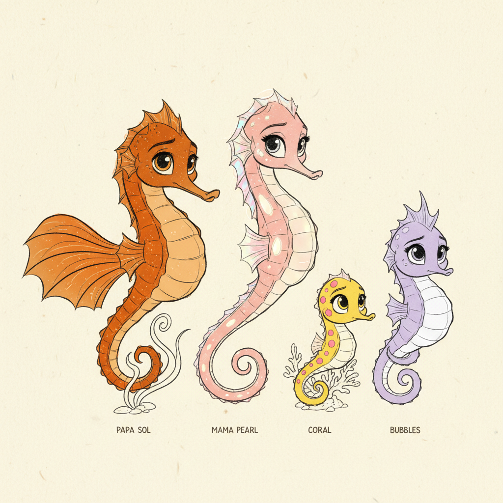
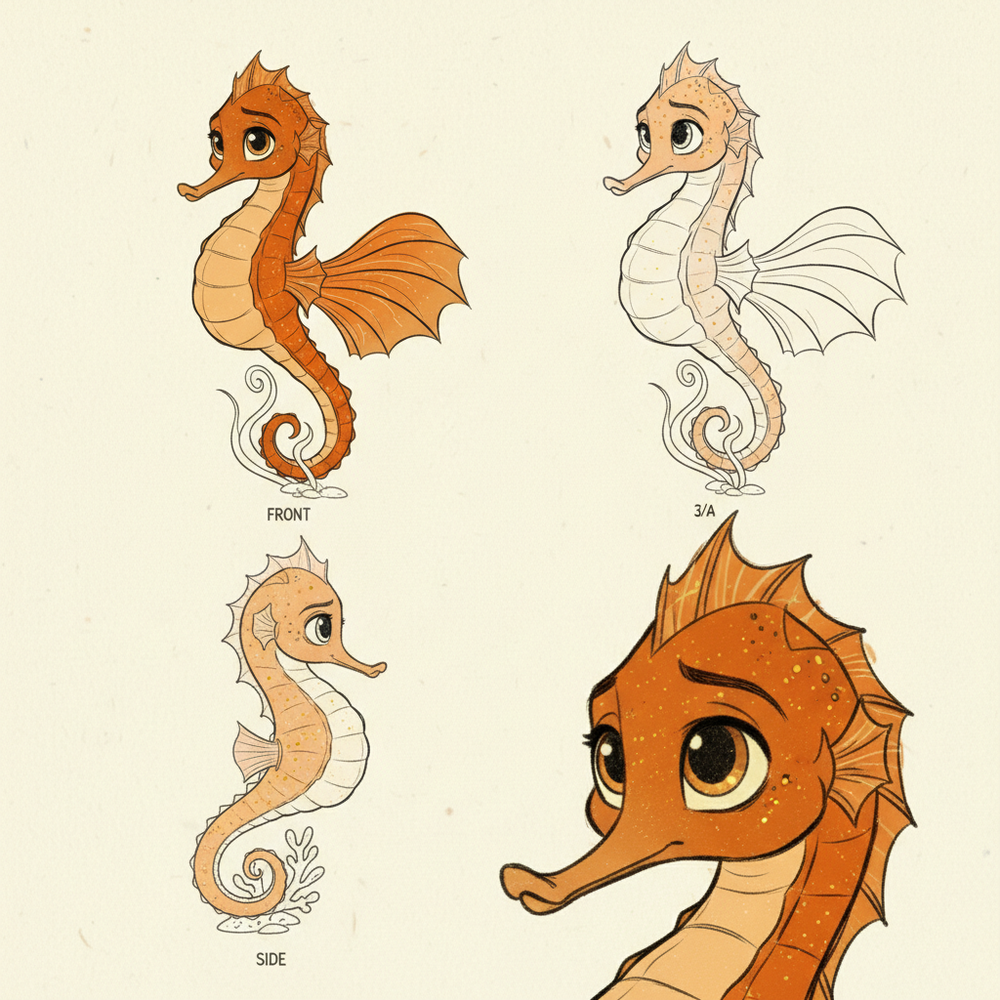
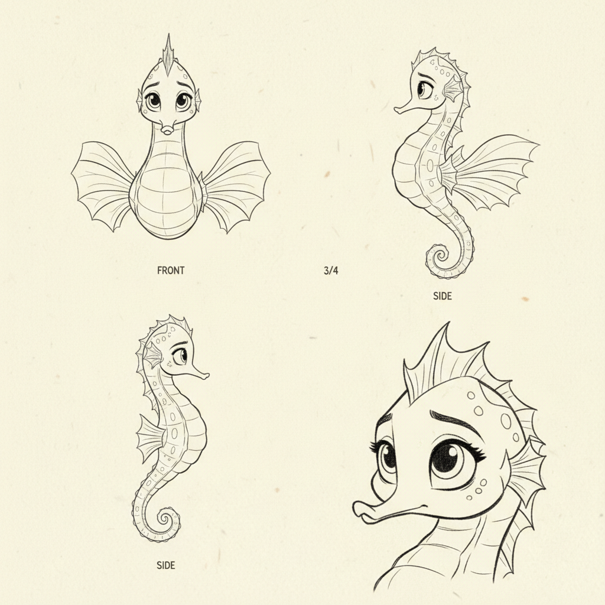
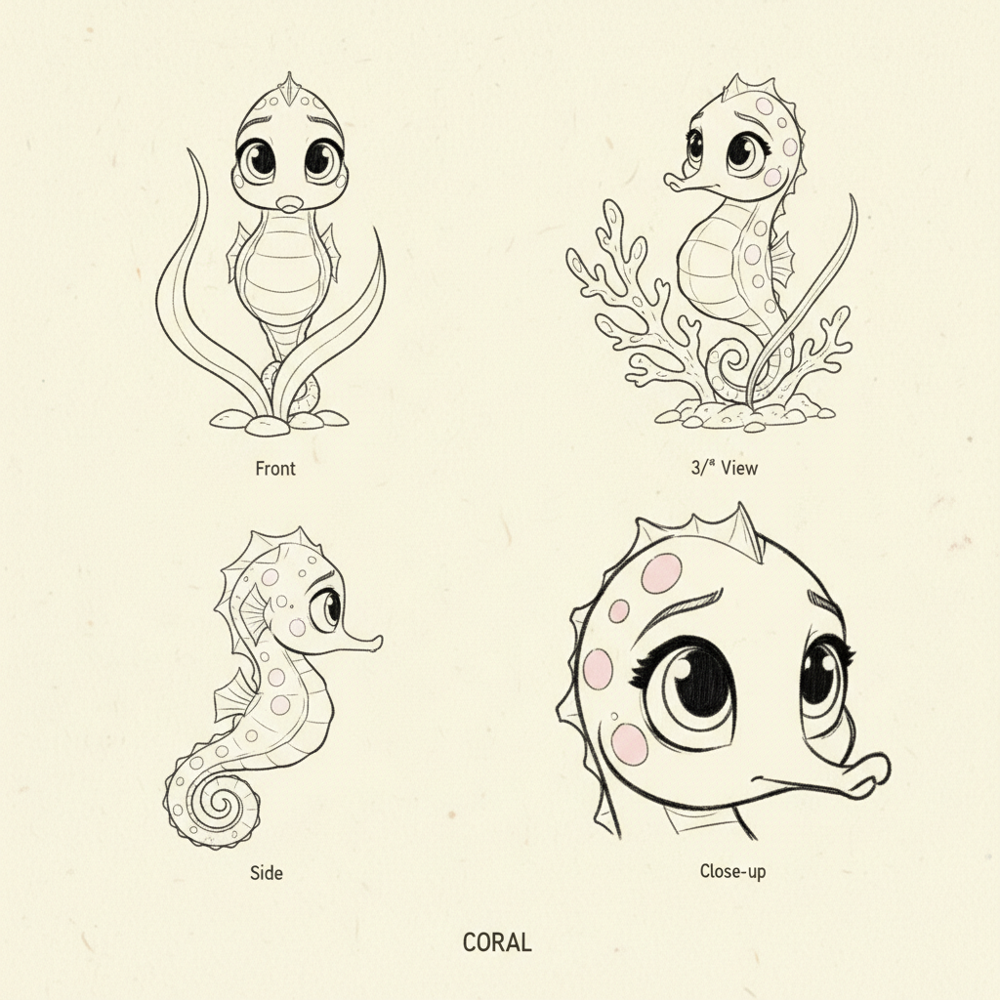
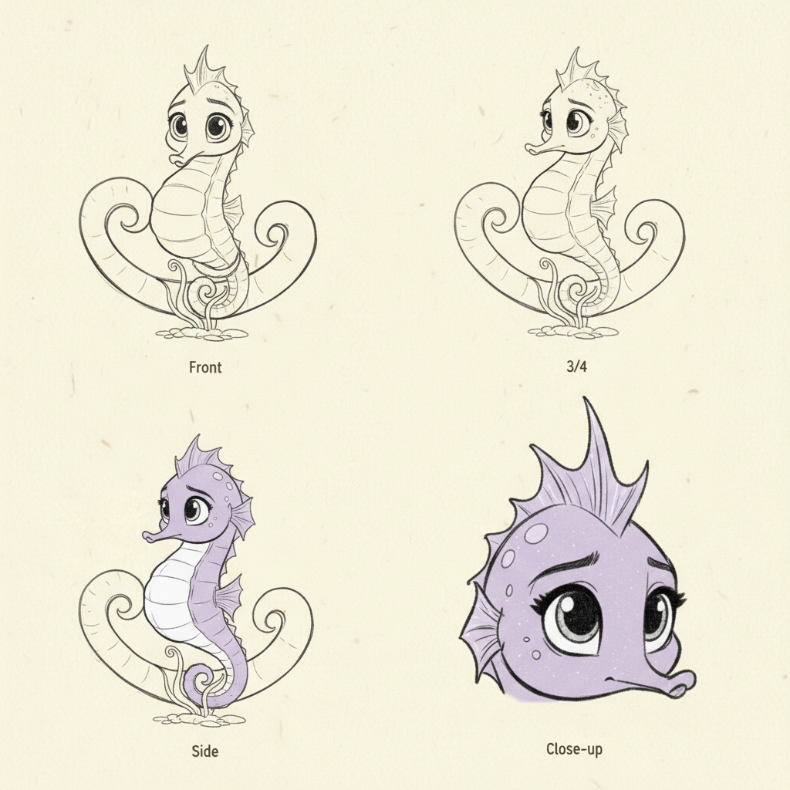
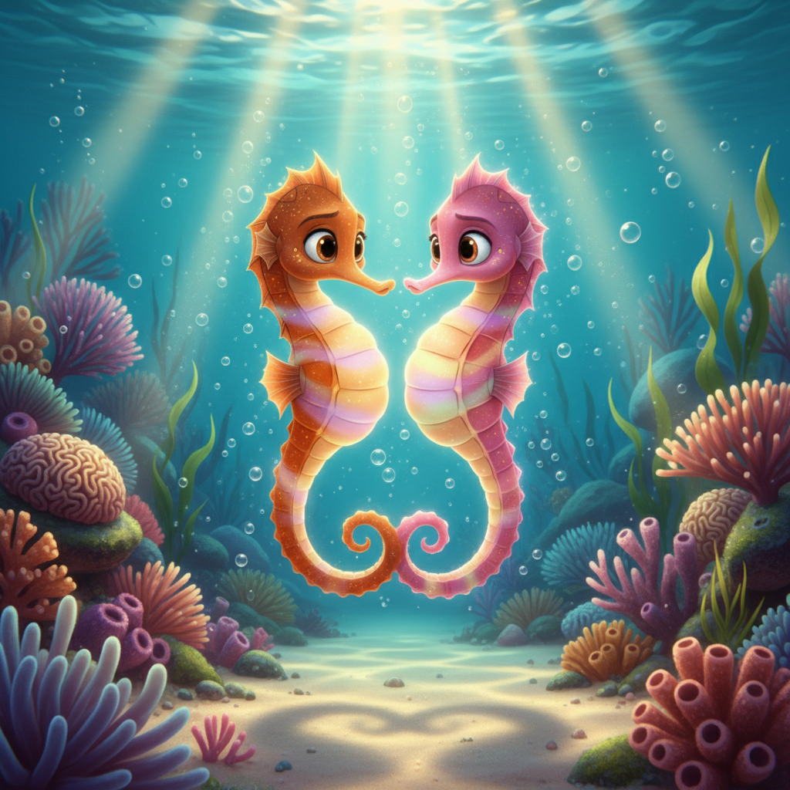
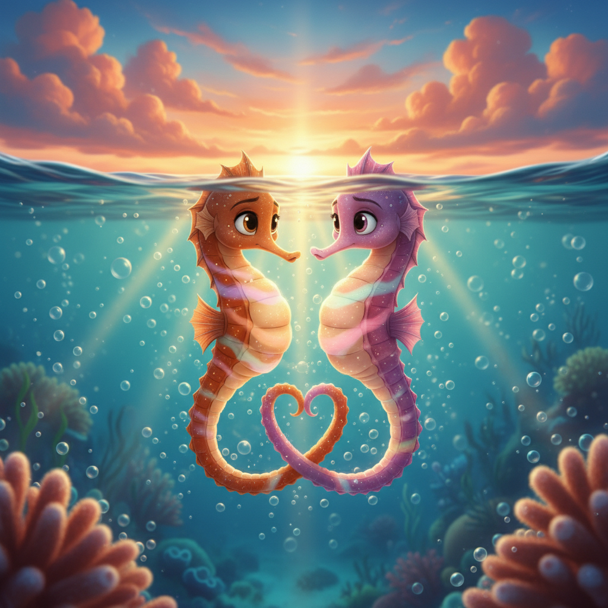
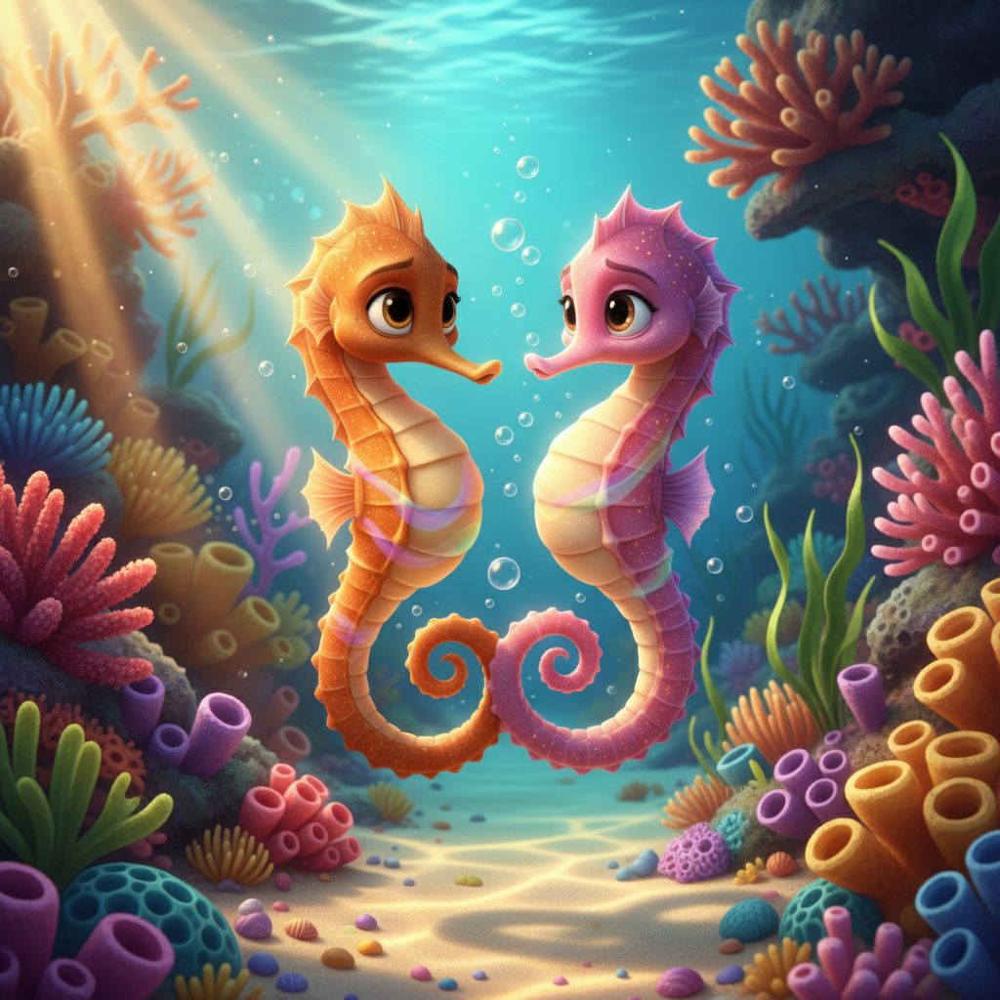
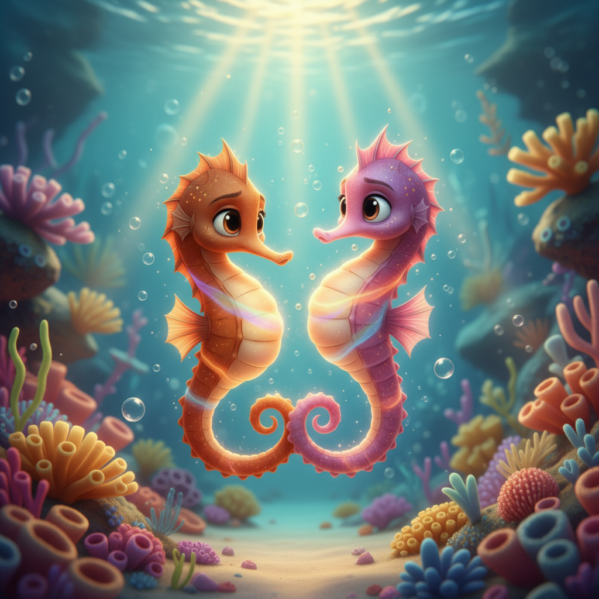
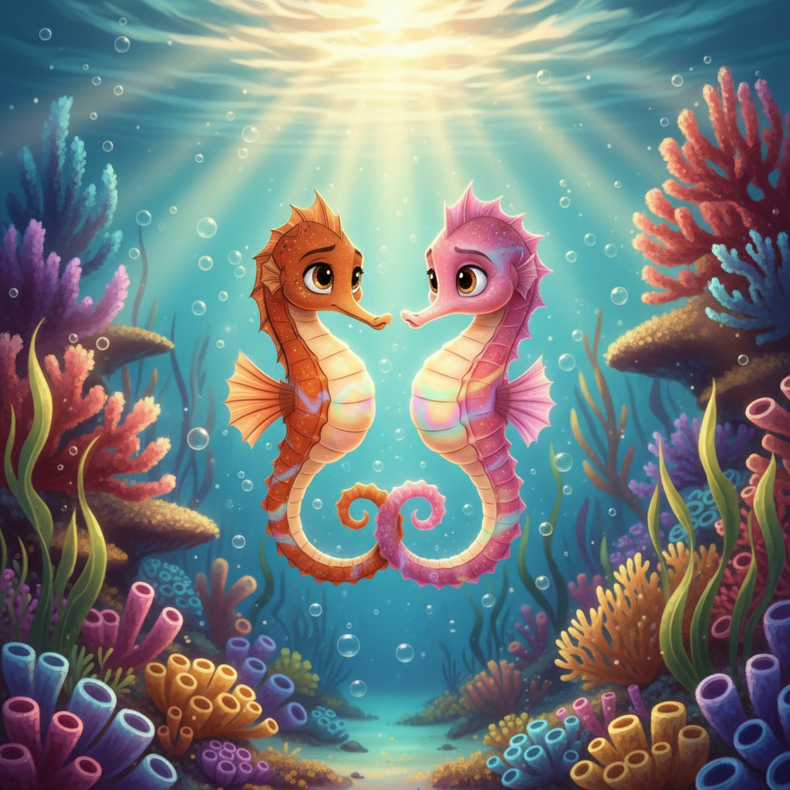

Seahorses: The Tiniest Dance in the Sea
Follow Coral the baby seahorse through her first day in the tropical reef, from swirling out of Papa's pouch to learning to grip, eat, and dance with her family
Preface
Welcome to the sparkling coral reef, where the tiniest and most magical fish in the sea live — seahorses! In this adventure, we'll follow Coral, a sunny little baby seahorse, as she discovers the wonders of her colorful underwater home with her devoted Papa Sol and graceful Mama Pearl.
Seahorses are truly one of nature's greatest surprises. Did you know that seahorse papas carry all the babies in a special pouch? And that seahorse parents dance together every single morning, changing colors and intertwining their tails? They are some of the most loving families in the ocean!
Through Coral's first day, you'll discover how seahorses grip with their curly tails, eat with their tubular snouts, look in two directions at once, and perform the most beautiful sunset dance you've ever seen. Get ready for a tiny, magical adventure!
Art Direction
Pre-Production Pipeline
Step 0: Storyline
pending (0 attempts)
pendingStep 1: Unified Cast Sheet
approved (1 attempts)
ApprovedStep 2: Character Sheets
approved
Papa Sol: approvedMama Pearl: approved
Coral: approved
Bubbles: approved
Step 3: Mood Proposals
approved
Moods: translucency, lush-botanicalStep 1: Unified Cast Sheets

approved.jpg (APPROVED) unified-cast-v1.jpg
unified-cast-v1.jpg
Step 2: Papa Sol Sheets

approved.jpg (APPROVED) sheet-v1.jpg
sheet-v1.jpg
Step 2: Mama Pearl Sheets

approved.jpg (APPROVED) sheet-v1.jpg
sheet-v1.jpg
Step 2: Coral Sheets
 approved.jpg (APPROVED)
approved.jpg (APPROVED)

sheet-v1.jpgStep 2: Bubbles Sheets
 approved.jpg (APPROVED)
approved.jpg (APPROVED)

sheet-v1.jpgStep 3: Pixar Mood Proposals
 APPROVED
APPROVED

1-translucency-botanical
2-epic-intimate
3-golden-botanical
4-translucency-intimate
5-epic-goldenCharacter Cast
Papa Sol
Proud handsome seahorse father in deep warm orange with golden speckles, rounded belly pouch, long elegant snout, beautiful fan-like dorsal fin
No portraitMama Pearl
Graceful seahorse mother in shimmering rose-pink with pearlescent white highlights, slightly taller than Papa, delicate almost-transparent fins
No portraitCoral
Tiny baby seahorse in bright sunny yellow with baby-pink spots, enormous round curious eyes, always curling tail around things
coral-and-bubbles-portrait.jpgBubbles
Slightly rounder baby seahorse in soft lavender-purple with white belly, tall coronet, shy, always gripping Papa's tail
coral-and-bubbles-portrait.jpgScene Plan (11 scenes)
Meet Papa Sol
Papa Sol is the proudest seahorse in all the reef! He is a handsome fellow in deep warm orange with golden speckles that shimmer like tiny stars whenever the sunlight touches him. His beautiful fan-like dorsal fin flutters so fast it's almost invisible. But the most special thing about Papa is his rounded belly pouch — because inside, dozens of tiny babies are growing! Papa holds onto a piece of swaying seagrass with his curly tail and rocks gently in the current. 'Almost time, little ones,' he whispers to his belly. 'Almost time.'
Meet Mama Pearl
Here comes Mama Pearl, the most graceful seahorse in the reef! She glides through the water like a dancer, her shimmering rose-pink body catching the light in every direction. Pearlescent white highlights run along her ridges like tiny opals, and her delicate fins are so thin and beautiful they look like stained glass windows when the sun shines through them. Mama is slightly taller than Papa — elegant and poised. She swims toward Papa with the biggest smile. 'Good morning, my love,' she calls. 'Are you ready for our dance?'
The Morning Dance
Every single morning, Mama Pearl and Papa Sol perform the most beautiful dance in the ocean. They swim toward each other through the golden water, and when they meet — they intertwine their curly tails! Then something magical happens: colors begin to ripple across their bodies! Papa flushes from orange to bright gold. Mama shimmers from pink to glowing peach. They spin together slowly, tails linked, changing colors like a living sunset. 'This is how we say I love you,' Mama whispers. They've danced every morning since they met — and they always will.
Papa's Special Pouch
While the babies grow, Papa Sol has the most important job in all the sea. His round pouch is like a tiny nursery — warm, safe, and full of growing seahorse babies! Papa grips a piece of seagrass with his curly tail and rocks gently back and forth in the current. He can't swim very far or very fast right now, but he doesn't mind one bit. 'I'm the luckiest Papa in the ocean,' he says, patting his belly softly. Mama Pearl brings him tiny shrimp to eat and nuzzles him. 'You're doing wonderfully, my love.'
The Big Arrival!
The most exciting day has arrived! Papa Sol grips his seagrass tightly, and then — WHOOSH! Tiny baby seahorses begin swirling out of his pouch like living confetti! Dozens and dozens of miniature seahorses spiral into the sparkling water, each one smaller than a grain of rice! They tumble and twirl in the current, surrounded by a cloud of tiny bubbles. Mama Pearl watches with tears of joy. 'They're here! They're all here!' Papa gasps, out of breath but beaming with pride. It's the most magical moment in the entire reef.
Meet Coral and Bubbles
Among all the tiny babies, two little seahorses stand out right away! Coral is bright sunny yellow with the cutest baby-pink spots and the most enormous curious eyes you've ever seen. She immediately starts looking around at EVERYTHING, her little tail curling with excitement. And right beside her is Bubbles — a slightly rounder baby in soft lavender-purple with a white belly and a distinctively tall coronet on her head. Bubbles is a bit shy, and the very first thing she does is grip Papa's tail. 'Don't worry, Bubbles,' Papa says gently. 'I've got you.'
Hold On Tight!
The very first lesson for baby seahorses is the most important one: hold on tight! Seahorses are the slowest swimmers in the ocean, so their curly tails are their superpower. Coral tries gripping a piece of bright green seagrass — her tiny tail wraps around it like a little spring. 'I did it! I did it!' she squeaks. Bubbles tries too, but instead of gripping the seagrass, she wraps her tail around Papa's tail. 'That works too,' Papa laughs. They practice gripping everything — seagrass, coral branches, each other's tails. It's the best game ever!
Snout Snacks!
Time for the first meal! Baby seahorses eat by sucking food through their long tubular snouts — SLURRRP! — like a tiny underwater vacuum cleaner. Coral spots a cloud of sparkly microscopic shrimp and — SLUUURP! — she sucks one right up! 'Mmmm!' Her eyes go wide. 'More! More!' Bubbles tries too — SLURP, SLURP — she's a natural! 'You need to eat ALL DAY LONG,' Mama Pearl tells them, 'because you have no stomach! Food goes straight through you.' 'No stomach?!' Coral gasps. 'Best excuse for always eating!'
Eyes Everywhere!
Coral makes the FUNNIEST discovery! She's looking at a pretty orange clownfish swimming in front of her, when she realizes — she can ALSO see Bubbles sneaking up behind her! Each of her eyes can look in a completely different direction at the same time! 'Bubbles, I can see you back there!' Coral giggles. 'HOW?!' Bubbles squeaks, startled. 'My eyes are magic! One looks forward, one looks backward!' Coral spins one eye up and one eye down. 'I can see the sky AND the sand at the same time!' Papa laughs. 'That's your seahorse superpower, little ones.'
The Grand Reef Tour
Time for an adventure! The whole family sets out to explore their magnificent reef home. They drift past waving purple sea fans as tall as trees, bright orange anemones where clownfish play peek-a-boo, yellow tube sponges that look like chimneys, and gardens of coral in every color imaginable. 'Look, Mama! A starfish!' squeals Coral, pointing with her snout. 'Look, Papa! Blue fish!' Bubbles whispers from behind Papa's tail. The reef is an endless wonderland of color and life. Even Papa and Mama discover something new. 'We've lived here our whole lives,' Mama marvels, 'and it still surprises us.'
The Sunset Dance
As the golden sunset light streams down through the water, Mama Pearl and Papa Sol begin their evening dance. Their tails intertwine, and colors ripple across their bodies — orange to gold, pink to peach, then both shimmer with rainbow light. And then something wonderful happens: Coral and Bubbles try to dance too! Coral flickers from yellow to green to — OOPS — bright red! Bubbles flashes from purple to blue and accidentally turns polka-dotted! They're not very good at it yet, but they're trying SO HARD. The whole family laughs and dances together as the reef glows gold around them. This is home. This is love. This is the tiniest, most beautiful dance in all the sea.
Viewer Details
The Brood Pouch
Look at Papa Sol's round belly — see that special pouch? That's the brood pouch, and it's one of the most amazing things in nature! Only papa seahorses have it. Mama places her eggs inside, and Papa carries them for 2-4 weeks. The pouch provides oxygen and nutrients to the growing babies, just like a nursery. When the babies are ready, Papa pumps his body back and forth to push them out into the world!
Prehensile Tail
A seahorse's tail is one of nature's cleverest inventions! Unlike most fish tails, it can curl and grip like a monkey's tail. Seahorses use it to anchor themselves to seagrass, coral, and even each other so they don't get swept away by the current. The tail has a square cross-section (not round!) which makes it even stronger for gripping. Coral loves wrapping her tail around everything she finds!
The Coronet
See the little crown on top of Bubbles' head? That's called a coronet! Every single seahorse has one, and no two are exactly alike — it's like a seahorse fingerprint! Scientists use coronets to tell individual seahorses apart. The coronet is made of bone and grows with the seahorse throughout its life. Bubbles has an especially tall, distinctive coronet that makes her easy to spot.
The Dorsal Fin
Papa Sol's beautiful fan-like dorsal fin is a tiny marvel of engineering! This single small fin on the seahorse's back is their main engine — it flutters an incredible 35 times per second, so fast it looks like a hummingbird wing! Despite this amazing speed, seahorses are still the slowest fish in the ocean. They also have two tiny pectoral fins behind their head that help them steer. It's like having a tiny propeller and two little rudders!
Fun Facts
Papa Power
Male seahorses carry and give birth to all the babies — they're one of the only species in the world where the father does this! Papa seahorse has a special pouch on his belly where the eggs grow for 2-4 weeks. When the babies are ready, he pushes them out into the water in a magical cloud of tiny seahorses. One papa can have up to 2,000 babies at once!
Super Snouts
Seahorses suck food up through their long tubular snouts like a tiny vacuum cleaner — SLURP! They have no teeth at all, so they swallow their food whole. A single seahorse can eat up to 3,000 tiny brine shrimp in one day! Their snouts are so powerful they can suck up food from over an inch away.
No Stomach!
Seahorses have no stomach at all! Food passes straight through their digestive system very quickly, which means they barely absorb any nutrients from each meal. That's why they need to eat almost constantly — all day long, every day! It's like having a never-ending snack time. Coral would approve!
Tiny Swimmers
Seahorses are the slowest fish in the entire ocean! The dwarf seahorse moves at only about 5 feet per hour — a garden snail is faster! But their tiny dorsal fin is incredible: it flutters up to 35 times per second, so fast it becomes almost invisible. They steer with their tiny pectoral fins behind their head, like little underwater helicopters.
Hidden Generation Sections
Using the seahorse from reference, extreme close-up of a seahorse's rounded brood pouch showing the opening and texture,...
Ref: meet-papaUsing the baby seahorse from reference, close-up of a seahorse's curling prehensile tail wrapped tightly around a piece ...
Ref: coral-and-bubblesUsing the baby seahorse from reference, close-up of a seahorse's coronet — the crown-like bony structure on top of the h...
Ref: coral-and-bubblesUsing the seahorse from reference, close-up of a seahorse's tiny dorsal fin fluttering rapidly, motion blur showing the ...
Ref: meet-papaUsing the seahorse from reference, show an orange seahorse father releasing tiny baby seahorses from his pouch, babies s...
Ref: meet-papaUsing the baby seahorse from reference, show a yellow baby seahorse sucking up tiny shrimp through its long tubular snou...
Ref: coral-and-bubblesUsing the baby seahorse from reference, show a cross-section educational illustration of a seahorse's body showing food ...
Ref: coral-and-bubblesEducational illustration showing a tiny seahorse next to a fast-swimming fish for size and speed comparison, the seahors...